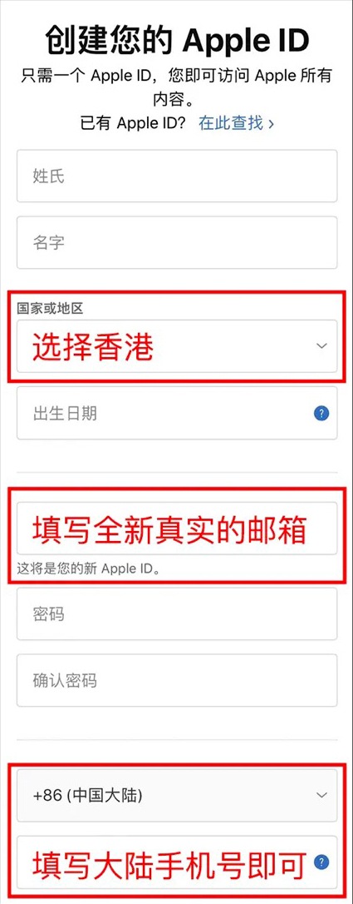
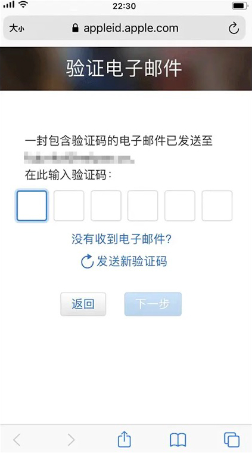
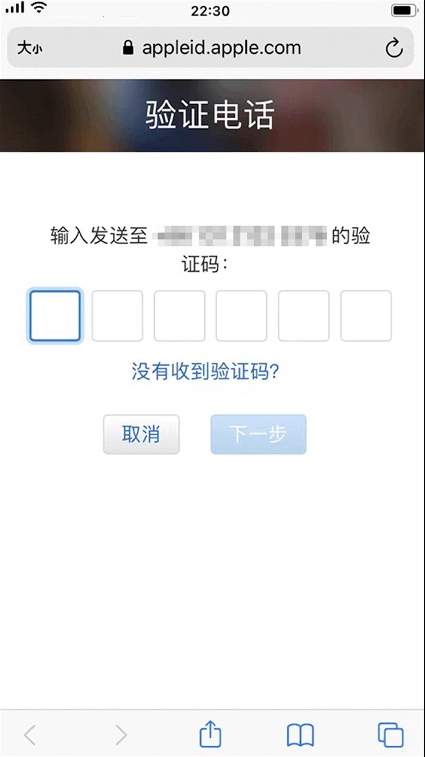
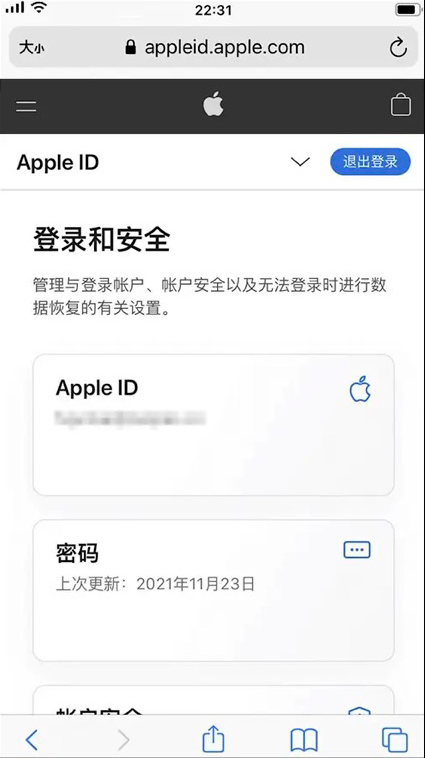
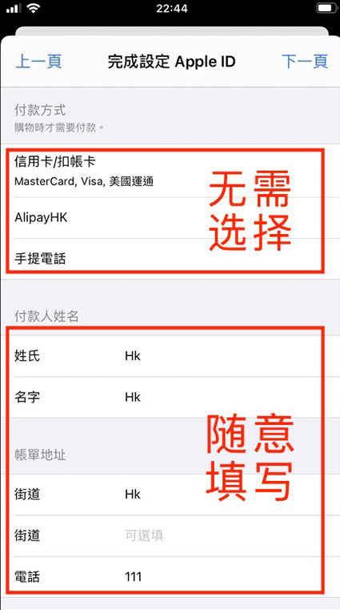

创建新账号
第一步:
进入 Apple 的创建 Apple lD 网站:
<https://appleid.apple.com/account>第二步:
根据提示输入您的个人相关信息，注意在国家和地区请选择<香港>，另外:
邮箱:需要准备一个从未注册过 Apple lD 的<全新真实>邮箱用来收取验证码;
手机号:支持<中国大陆>的手机验证;

第三步:
所有的信息输入完成后会进入到<邮箱验证>

第四步:
邮箱验证完成后会进入到<手机号验证>

第五步:
当进入到<登录和安全>页面说明您的<香港 ApplelD>已经注册成功了;

第六步:
打开 App Store ，点击<右上角图标>;
，点击<右上角图标>;

第七步:
选择<退出登录>记得一定要滑倒页面底部才能看到;

第八步:
在 App Store 中登录您刚刚注册的<香港 ApplelD>这里记得选择<登录>不要点击右上角的完成;

最后一步:
温馨提示
新的 Apple lD 在首次下载软件时，会要求设定 Apple然后按照提示一步一ID 的一些信息，点击<检查>，步操作即可，需要注意的是<付款方式>不要做任何选择，其它的内容可随意填写。

下载完成Starry Kit 后，您可以随时把 Apple lD 切换回原来的<中国大陆>账号，当然您也可以在香港商店中下载各种海外热门应用，全部都能支持!
注:若您在下载过程中有任何问题，随时联系在线客服，我们会有专业的客服团队帮助您解决任何问题。